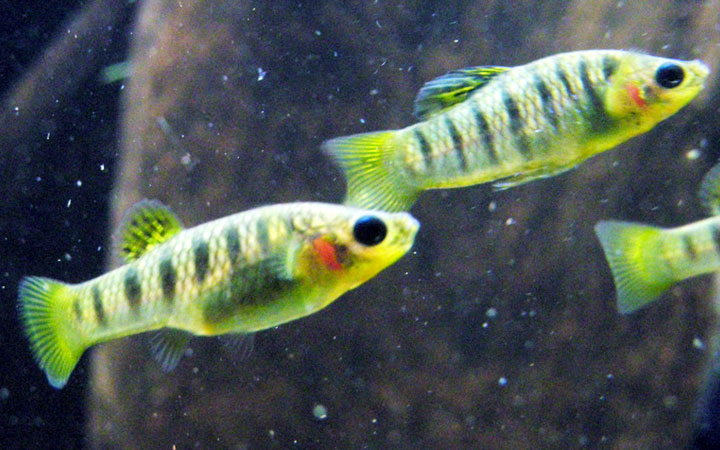
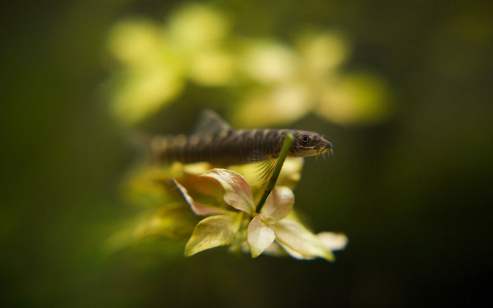

Have you been looking for an unusual yet attractive fish to keep in your tank? Then Limia fish may be a perfect choice. Limia belongs to
a genus of livebearing fishes under the Poeciliidae family, which includes other creatures like swordtails, mollies, guppies, and
platys. There are about 21 documented…

Getting a pet is no easy decision. You should take into account its feeds, have someone to take care of it when you are not around and
invest in a few things essential for its survival. Even so, you can be assured of companionship with the right pet, boosted mental…